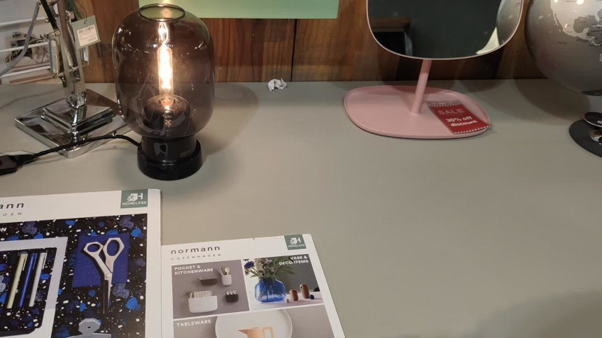
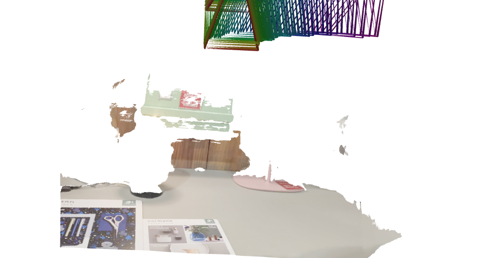
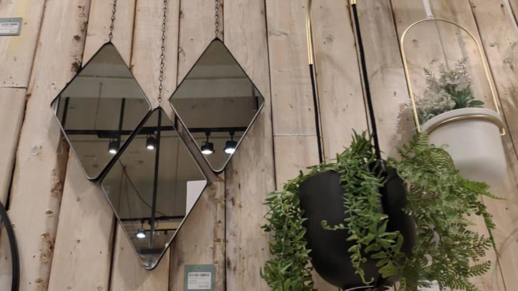
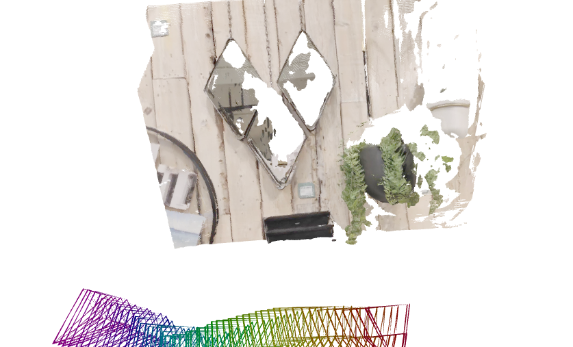

EE243 Final Project
by Calvin Glisson, Chansong Lim
The current frontier: SelfEvo
We identified the current frontier in 3D reconstruction with public code as SelfEvo, a method for improving pretrained models (such as VGGT) with self-distillation on unlabeled videos. The authors accomplish this using a student-teacher framework where the student must learn to create accurate reconstructions without access to all of the same video context that the teacher has, making a constant self-improvement pipeline possible. Evaluations show the method to consistently outperform standard VGGT across a variety of datasets, including the native evaluation benchmarks of VGGT. The self-distillation framework also makes it possible to train on natural, dynamic scenes where VGGT struggles.
Success Cases
For a typical scene, SelfEvoVGGT creates an excellent reconstruction. For example, here is the reconstruction it creates from a video of the benches on the second floor of Winston Chung Hall:
Failure Cases
We were able to identify two main failure cases where even SelfEvoVGGT cannot produce an accurate reconstruction. One case that is challenging is videos with reflections, especially large mirrors. Mirrors present the illusion of there being objects and space where there is none, and often present distortions and specularities that can be confusing for a 3D reconstruction method and make an otherwise static scene appear dynamic. As a result, when inputting frames from a video that gently sways the camera in front of mirrors and specular surfaces, the resulting reconstruction shows a variety of failure modes. Below are some examples: on the left are frames from the video, and on the right are the resulting reconstructions. Notably, the areas with mirrors or specularities are absent from the reconstruction, and some reconstructions turn out to be warped and geometrically broken.


In some cases the method incorrectly reconstructs reflected objects as if they were present in the mirror surface, for example:

